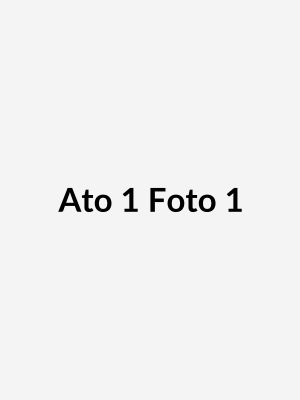
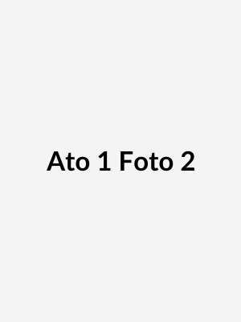
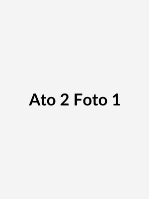
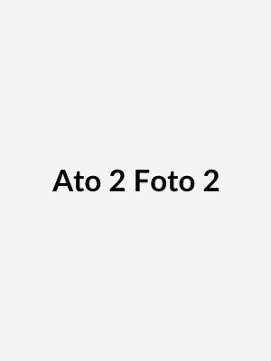

Seção 1: Melodia do Silêncio
Poesia sobre o tempo e o silêncio.


Seção 2: Entre Bastidores
Texto sobre espontaneidade e memória.


Poesia sobre o tempo e o silêncio.
Texto sobre espontaneidade e memória.